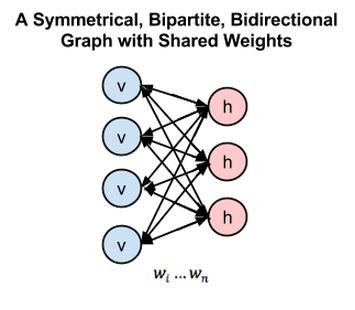

目录
受限玻尔兹曼机（RBM）由Geoff Hinton发明，是一种用于降维、分类、回归、协同过滤、特征学习和主题建模的算法。（如需通过实例了解RBM等神经网络的应用方法，请参阅应用案例)。
我们首先介绍受限玻尔兹曼机这类神经网络，因为它相对简单且具有重要的历史意义。下文将以示意图和通俗的语言解释其运作原理。
RBM是有两个层的浅层神经网络，它是组成深度置信网络的基础部件。RBM的第一个层称为可见层，又称输入层，而第二个层是隐藏层。

上图中每个圆圈都是一个与神经元相似的单元，称为节点，运算在节点中进行。一个层中的节点与另一层中的所有节点分别连接，但与同一层中的其他节点并不相连。
也就是说，层的内部不存在通信－这就是受限玻尔兹曼机被称为受限的原因。每个节点对输入进行处理和运算，判定是否继续传输输入的数据，而这种判定一开始是随机的。(“随机”（stochastic）一词在此处指与输入相乘的初始系数是随机生成的。)
每个可见节点负责处理网络需要学习的数据集中一个项目的一种低层次特征。举例来说，如果处理的是一个灰度图像的数据集，则每个可见节点将接收一张图像中每个像素的像素值。（MNIST图像有784个像素，所以处理这类图像的神经网络的一个可见层必须有784个输入节点。）
接着来看单个像素值x如何通过这一双层网络。在隐藏层的节点1中x与一个权重相乘，再与所谓的偏差相加。这两步运算的结果输入激活函数，得到节点的输出，即输入为x时通过节点的信号强度。
激活函数f((权重w * 输入x) + 偏差b ) = 输出a

下面来看一个隐藏节点如何整合多项输入。每个x分别与各自的权重相乘，乘积之和再与偏差相加，其结果同样经过激活函数运算得到节点的输出值。

由于每个可见节点的输入都被传递至所有的隐藏节点，所以也可将RBM定义为一种对称二分图。
对称指每个可见节点都与所有的隐藏节点相连接（见下图）。二分指有两个部分或层，而这里的图是指代节点网络的数学名词。
在每个隐藏节点中，每一个输入x都会与其相对应的权重w相乘。也就是说，每个输入x会对应三个权重，因此总共有12个权重（4个输入节点 x 3个隐藏节点）。两层之间的权重始终都是一个行数等于输入节点数、列数等于输出节点数的矩阵。
每个隐藏节点会接收四个与对应权重相乘后的输入值。这些乘积之和与一个偏差值相加（至少能强制让一部分节点激活），其结果再经过激活运算得到每个隐藏节点的输出a。

如果这两个层属于一个深度神经网络，那么第一隐藏层的输出会成为第二隐藏层的输入，随后再通过任意数量的隐藏层，直至到达最终的分类层。（简单的前馈动作仅能让RBM节点实现自动编码器的功能。）

但在本教程中，我们将重点关注受限玻尔兹曼机如何在无监督情况下学习重构数据（无监督指测试数据集没有作为实际基准的标签），在可见层和第一隐藏层之间进行多次正向和反向传递，而无需加大网络的深度。
在重构阶段，第一隐藏层的激活值成为反向传递中的输入。这些输入值与同样的权重相乘，每两个相连的节点之间各有一个权重，就像正向传递中输入x的加权运算一样。这些乘积的和再与每个可见层的偏差相加，所得结果就是重构值，亦即原始输入的近似值。这一过程可以用下图来表示：

由于RBM权重初始值是随机决定的，重构值与原始输入之间的差别通常很大。可以将r值与输入值之差视为重构误差，此误差值随后经由反向传播来修正RBM的权重，如此不断反复，直至误差达到最小。
有关反向传播算法的详细介绍请参见此页。
由此可见，RBM在正向传递中使用输入值来预测节点的激活值，亦即输入为加权的x时输出的概率：p(a|x; w)。
但在反向传递时，激活值成为输入，而输出的是对于原始数据的重构值，或者说猜测值。此时RBM则是在尝试估计激活值为a时输入为x的概率，激活值的加权系数与正向传递中的权重相同。 第二个阶段可以表示为p(x|a; w)。
上述两种预测值相结合，可以得到输入 x 和激活值 a 的联合概率分布，即p(x, a)。
重构与回归、分类运算不同。回归运算根据许多输入值估测一个连续值，分类运算是猜测应当为一个特定的输入样例添加哪种具体的标签。
而重构则是在猜测原始输入的概率分布，亦即同时预测许多不同的点的值。这被称为生成学习，必须和分类器所进行的判别学习区分开来，后者是将输入值映射至标签，用直线将数据点划分为不同的组。
试想输入数据和重构数据是形状不同的常态曲线，两者仅有部分重叠。
RBM用Kullback Leibler散度来衡量预测的概率分布与输入值的基准分布之间的距离。相关数学运算的详细说明可参见维基百科。
KL散度衡量两条曲线下方不重叠（即离散）的面积，而RBM的优化算法会尝试将这些离散部分的面积最小化，使共用权重在与第一隐藏层的激活值相乘后，可以得到与原始输入高度近似的结果。下图左半边是一组原始输入的概率分布曲线p，与之并列的是重构值的概率分布曲线q；右半边的图则显示了两条曲线之间的差异。

RBM根据权重产生的误差反复调整权重，以此学习估计原始数据的近似值。可以说权重会慢慢开始反映出输入的结构，而这种结构被编码为第一个隐藏层的激活值。整个学习过程看上去像是两条概率分布曲线在逐步重合。

下面我们来介绍概率分布。如果掷两枚骰子，则所有结果的概率分布情况如下图所示：

也就是说，7是最有可能出现的结果，因为掷出7的组合方式（3+4、1+6、2+5）要多于掷出2到12之间其他数字的方式。任何预测掷骰子结果的公式都需要考虑到数字7的出现频率较高。
或另一个例子：语言中的字母也有特定的概率分布，因为一种语言使用某些字母的频率会高于其他语言。在英语中，字母e、t和a是最常见的，而冰岛语中最常见的字母则是a、r和n。若用处理英语文本的权重来重构冰岛语，结果就会出现较大的误差。
与此类似，图像数据集的像素值也有独特的概率分布，具体取决于数据集所包含图像的类别。数据集可能包括MNIST的手写数字图像：

或是自然脸部检测数据集（Labeled Faces in the Wild）中的头像：

试想有这样一个RBM，其输入数据都是大象和狗的图片，RBM仅有两个输出节点，分别对应一种动物。RBM在正向传递中要回答的问题是：在输入这些像素时，权重应当向哪个节点发送更强的信号？大象的节点还是狗的节点？而RBM在反向传递中要回答的问题是：如果输出是大象，则应当预期出现怎样的像素分布？
这就是联合概率：给定a时x的概率以及给定x时a的概率，用RBM两层之间的一个共用权重来表示。
学习重构数据的过程在某种意义上即是学习一组特定图像中有哪些像素通常会同时出现。网络深处隐藏层节点产生的激活值代表了明显的同现关系，例如：“非直线灰色管 + 大而松垂的耳朵 + 皱纹”。
在上面的两幅图中，可以看到用Deeplearning4j实施的RBM所学会的重构。这些重构数据代表了原始数据在RBM激活函数“想象”中的模样。Geoff Hinton称之为机器在“做梦”。在神经网络训练过程中，这类图像是非常有用的示意性方法，可以让人确信RBM的确是在学习。如果RBM没有在学习，则应当调整它的超参数，下文将会介绍这一概念。
最后一点：你会发现RBM有两个偏差值。这是RBM与其他自动编码器的区别所在。隐藏的偏差值帮助RBM在正向传递中生成激活值（因为偏差设定了下限，所以无论数据有多稀疏，至少有一部分节点会被激活），而可见层的偏差则帮助RBM通过反向传递学习重构数据。
RBM根据第一个隐藏层的激活值学习了输入数据的结构之后，数据即在网络中继续向下传递一层。第一个隐藏层的作用现在相当于可见层。激活值实际上相当于输入，在第二个隐藏层的节点中与权重相乘，得到另一组激活值。
将特征分组，再将特征组分组，由此连续生成多组激活值的过程是特征层次分析的基础，神经网络用这种方法来学习更为复杂且抽象的数据表达形式。
每增加一个隐藏层，其权重都会反复进行调整，直到该层能较为准确地模拟出来自前一层的输入。这是无监督的逐层贪婪预训练方法，不需要标签就可以改进网络的权重，也就是说可以采用未标记、未经人工处理的数据来训练，而现实中大部分的数据都属于这一类别。一般的规律是，算法接触的数据越多，产生的结果越准确，这正是深度学习算法十分厉害的原因之一。
权重能够近似模拟出数据的特征后，也就为下一步的学习奠定了良好基础，比如可以在随后的有监督学习阶段使用深度置信网络来对图像进行分类。
RBM有许多用途，其中最强的功能之一就是对权重进行合理的初始化，为之后的学习和分类做好准备。从某种意义上来说，RBM的作用与反向传播相似：让权重能够有效地模拟数据。可以认为预训练和反向传播是实现同一个目的的不同方法，二者可以相互替代。
下面这幅对称二分二向图综合显示了玻尔兹曼机的运作方式。
深度RBM是一种有向无环图（DAG），如有兴趣可点击链接了解其结构。
请参考这里
变量 'k' 是对比散度算法运行的次数。对比散度是用于计算梯度（代表网络权重与其误差之间关系的斜率）的方法，也是网络进行学习的必要条件。
对比散度算法每运行一次，就是一个组成受限玻尔兹曼机的马尔可夫链的样本。k的值通常为1。
在上文的示例中，可以看到如何用更为通用的MultiLayerConfiguration来创建多个RBM层。每个点后面都是一项调节深度神经网络结构和性能产生的额外参数。大多数参数的定义都可在本网站内找到。
weightInit或weightInitialization表示用于放大或削弱进入每个节点的输入的系数的初始值。合理的初始权重可以节约大量训练时间，因为网络训练无非是通过调整系数来传输最佳的信号，进而让网络能进行准确的分类。
activationFunction指一组确定节点信号传输阈值的函数，高于阈值则让信号通过节点，反之则阻拦信号。如果节点让信号通过，则该节点被“激活”。
optimizationAlgo指神经网络逐步调整系数，最小化误差或求取最小误差轨迹的方式。LBFGS是一种使用二阶导数来计算系数调整所依据的梯度斜率的算法，其名称中的每个字母都代表一位发明人的姓。
l2等regularization方法帮助神经网络防止过度拟合。常态化实质上就是惩罚较大的系数，因为较大的系数表明网络在学习过程中将结果与个别权重较大的输入联系起来。权重过大可能导致网络模型无法通用，难以适应新的数据。
VisibleUnit/HiddenUnit指一个神经网络的层。VisibleUnit是节点中接收输入的层，而HiddenUnit则是对来自更复杂特征的输入进行重组的层。这两种单元都有自己的变换算法，可见层是高斯变换，而隐藏层则是修正线性变换，用于将这些层输出的信号映射至新的空间。
lossFunction用于衡量误差，而误差即是网络的猜测与测试数据集中包含的正确标签之间的差异。这里我们使用SQUARED_ERROR，可以将所有误差变为正数，以便于进行求和及反向传播运算。
learningRate与momentum相似，可以调节神经网络每次根据误差修正系数时的调整幅度。这两项参数帮助决定网络用梯度下降求取局部最佳结果时每一步的幅度。学习速率较高会加快网络的学习速度，但有可能使结果超过最佳值。学习速率较低会减慢学习速度，导致效率低下。
连续受限玻尔兹曼机（CRBM）是一种借由不同的对比散度采样方式接收连续输入（即比整数分得更细的数值）的RBM。所以CRBM能够处理图像像素或字数向量等标准化至零与一之间的小数。
应当注意的是，深度神经网络的每一层都必须有四个元素：输入、一组系数、一个偏差以及变换机制（激活算法）。
输入是数值数据、向量，来自前一个层（或原始数据）。系数是通过每个节点层的各类特征所获得的权重。偏差确保无论出现怎样的情况，一个层内都会有一部分节点被激活。变换机制是对通过每个层后的数据进行挤压的附加算法，它能让梯度更容易计算（梯度是网络学习的必要条件）。
不同层可能采用不同的附加变换算法及组合方式。
有效的连续受限玻尔兹曼机对可见（输入）层采用高斯变换，而对隐藏层使用修正线性单元变换。这在人脸重构方面特别有效。对于处理二进制数据的RBM，两种层都使用二进制变换即可。
RBM隐藏层使用高斯变换的效果并不理想。而修正线性单元变换则能够表示的特征多于二进制变换，我们将其用于深度置信网络。
你可以将RBM的输出数值视为百分数。重构的数值只要不为零就都是良好的现象，表明RBM在学习这一输入。如需从另一角度了解受限玻尔兹曼机的运作机制，请点击此处。
应当注意的是，RBM并不是效果最稳定、最一致的浅层前馈网络。许多情况下，包含稠密层的自动编码器效果更好。整个行业也确实越来越倾向于使用变分自动编码器等工具。
下面我们将演示如何实施深度置信网络，其实质就是将许多受限玻尔兹曼机堆叠起来。